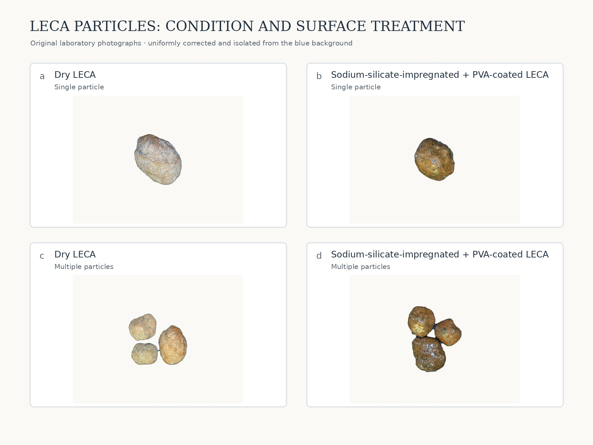
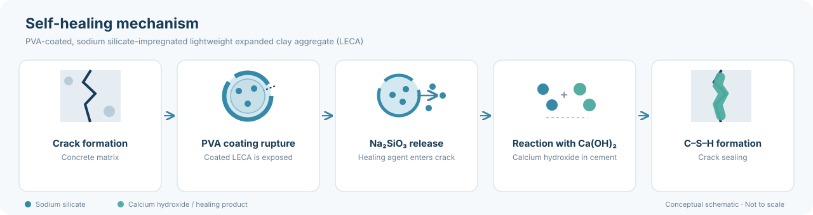

Experimental materials · Healing-agent carrier
Lightweight expanded clay aggregate (LECA) was used as a porous carrier for the sodium-silicate-based healing agent. The particles were impregnated with sodium silicate solution, allowing the solution to enter and be retained within their accessible pore structure. To limit premature leakage during concrete mixing, the impregnated particles were subsequently coated with a protective polyvinyl alcohol (PVA) film.
LECA is immersed in 40% sodium silicate solution for 3 days at ambient temperature.
A 5 wt% solution is prepared by dissolving 50 g PVA in 950 g sterilized water at 95 °C for 1 h, then kept for 24 h at ambient temperature.
The PVA solution is sprayed onto the impregnated particles; the coating layers are dried using hot air from a hair dryer.

When a crack intersects a coated particle, rupture of the PVA film can expose the carrier and enable the stored sodium silicate to enter the crack. The released silicate can react with calcium hydroxide available in the cementitious matrix, promoting the formation of additional calcium silicate hydrate (C–S–H) that contributes to crack sealing.
